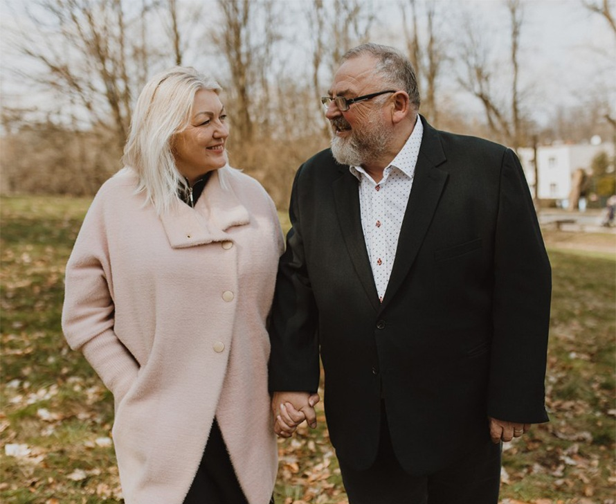

Pastorzy
Zdzisław i Lucyna Niemiec
Pastorzy Kościoła w Świebodzicach od 2008 roku.
W pełni oddani służbie Bogu i ludziom.
Razem tworzą autentyczne, pełne ciepła i troski przywództwo. Swoje życie opierają na prawdzie Pisma Świętego i relacji z Bogiem, Jezusem i Duchem Świętym. Ich życie jest świadectwem Bożego działania. Mają ogromne serce dla ludzi, zawsze gotowi do modlitwy i pomocy. Prowadzą kościół z pokorą i zaangażowaniem — obecni w życiu wspólnoty na co dzień. Prywatnie ludzie pełni życzliwości i troski o innych. Prowadzą otwarty dom, słyną z gościnności i dobrej kuchni. Są dziadkami sześciorga wnucząt i rodzicami trzech dorosłych synów, którzy całymi rodzinami służą Bogu jako pastorzy i liderzy w kościołach w Warszawie.